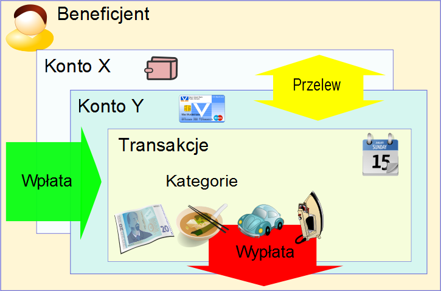

| Languages: | English | German | French | Hungarian | Italian | Polish | Russian | Spanish |
Money Manager Ex (MMEX) jest osobistym programem do zarządzania finansami dla każdego, kto chce śledzić przepływ swoich środków i swoje wydatki. Bazując na prostych zasadach, umożliwia on każdemu - niezależnie od posiadanej wiedzy o finansach i księgowości - zarządzanie z powodzeniem własnymi pieniędzmi. MMEX realizuje to zadanie przez modelowanie rzeczywistego świata finansów. Money Manager EX jest programem typu Open Source, więc możesz używać go bez ograniczeń i bez ponoszenia żadnych opłat.
Główną zaletą MMEX jest uproszczenie procesu śledzenia informacji finansowych w łatwym w użyciu programie. Można go używać tak często jak to konieczne, co pomoże ustalić nam skąd wpływają nasze środki, a co ważniejsze, na co zostają wydane. Będzie to pomocne przy podejmowaniu lepszych decyzji finansowych w przyszłości.
Uważaj Money Manager Ex za komputerową książkę czekową, która umożliwia Ci zbilansowanie Twoich rachunków bankowych, a także zorganizowanie, zarządzanie i generowanie raportów Twoich finansów.
Jest to również doskonały sposób na bieżące śledzenie swojej wartości finansowej.
Celem tej instrukcji jest wprowadzenie do podstaw używania MMEX. Instrukcja będzie rozwijana wraz z rozwojem programu. Przy każdej aktualizacji programu sprawdź więc system pomocy do jego obsługi, aby zobaczyć co w nim jest nowego i jak lepiej użytkować MMEX.
Finansowe zorganizowanie się wymaga pewnej dozy samodyscypliny. Zarządzanie finansami wydaje się skomplikowane ze względu na brak jasnego zrozumienia przepływu gotówki lub idei "przychody vs wydatki". Zadłużenie jest zwykle rezultatem przekroczenia wydatków w stosunku do przychodów. Wtedy musimy zaciągać kredyty, aby utrzymać płynność finansową i umożliwić sobie zakup niezbędnych rzeczy.
Pierwszym krokiem do lepszej organizacji finansów jest prowadzenie dobrych zapisów. Tylko wtedy, kiedy są rozpoznane codzienne wydatki, można wysnuć wnioski jak je ograniczyć i na czym można zaoszczędzić, kiedy nasza płynność finansowa staje się zagrożona. Jeżeli jednak musimy już zaciągnąć kredyt, zawsze możemy lepiej zarządzać naszym długiem.
Czy zdajesz sobie sprawę, że wydałeś 1800 zł na kupno filmów na DVD w ubiegłym roku? Ile razy je obejrzałeś? Czy może teraz uważasz, że te 1800 zł lepiej by było przeznaczyć na naprawę niespodziewanej usterki samochodu, która zdarzyła się wczoraj? Oczywiście nie ma dobrej lub złej odpowiedzi na pytanie jak powinieneś wydawać swoje pieniądze. W końcu są to Twoje pieniądze i masz prawo do wydania ich w dowolny sposób, jaki uznasz za dobry. Zawsze jednak możesz spowodować, żeby Twoje pieniądze lepiej pracowały dla Ciebie.
Tu jest właśnie miejsce dla programów do zarządzania osobistymi finansami. Pomagają one poukładać cząstki danych finansowych i dają lepszy wgląd w ogólną sytuację finansową. Zawsze pamiętaj, że program może być tylko wtedy pomocny, kiedy ma do dyspozycji jak najwięcej rzetelnych danych do analizy. Wprowadzisz do programu "śmieci", to w wyniku także je otrzymasz. Jeżeli jednak zaczniesz zastanawiać się nad tym zagadnieniem lub używać programu do zarządzania finansami osobistymi, jesteś na dobrej drodze do pełnej kontroli nad każdą złotówką.
Dowiedz się zatem, jak używać Money Manager Ex
Money Manager Ex modeluje rzeczywisty świat finansowy, aby pomóc nam utrzymać pod kontrolą nasze osobiste finanse.
Generalnie, pieniądze otrzymujemy od kogoś za wykonaną pracę/usługę lub za sprzedaż rzeczy. Jest to uważane za przychód czyli Wpłatę do naszego systemu. Kiedy kupujemy towary lub korzystamy z usług, pieniądze, które na to wydajemy, są wydatkami czyli Wypłatą z naszego systemu. Osoby (lub instytucje), które są odbiorcami naszych pieniędzy lub też od których je dostajemy, są w systemie MMEX nazywane Beneficjentami.
Jeżeli szczęśliwie nie wydajemy od razu wszystkich zarobionych pieniędzy, będziemy oczywiście potrzebować miejsca gdzie możemy trzymać nadwyżkę. Zwykle jest to jedna lub kilka instytucji finansowych (banków), albo po prostu nasza kieszeń. MMEX nazywa te miejsca Kontami.
Kiedy wydajemy lub otrzymujemy pieniądze, widzimy to w systemie jako transakcje, natomiast przyczyna poniesionego wydatku lub otrzymanego przychodu jest naszą kategorią. Może się też zdarzyć, że będziemy chcieli przetransferować pieniądze z jednego naszego miejsca do innego (będzie to np. wypłata z bankomatu). Taki typ transakcji jest znany jako przelew.
W uproszczeniu przedstawia to następujący diagram:

Innym ważnym czynnikiem jest waluta której używamy do realizowania transakcji.
Aby śledzić wszystkie wspomniane elementy oraz relacje zachodzące pomiędzy nimi, MMEX używa utworzonej bazy danych do ich przechowywania.
Baza danych tworzona przez MMEX jest plikiem o rozszerzeniu .mmb, który jest ważny ze względu na swoją zawartość. Zależnie od okoliczności, można stosować zabezpieczenie pliku poprzez jego zaszyfrowanie, co utworzy plik o rozszerzeniu .emb. Taki plik danych jest zabezpieczony nadanym hasłem, które musi być wprowadzane przy każdym otwarciu MMEX.
Nie zapomnij hasła do zaszyfrowanego pliku danych!
W każdym systemie komputerowym, zwykle najważniejsze dla nas są dane wytworzone przez nas samych. Dlatego potrzebne są zabezpieczenia na wypadek awarii systemu. MMEX posiada system tworzenia kopii, który tworzy datowane kopie pliku danych przy każdym otwarciu i jeżeli to konieczne, potrafi uaktualniać dzienne kopie w przypadku kiedy baza danych jest otwierana więcej niż raz dziennie. Dla każdej bazy danych utrzymywane są 4 kopie, tworzone w czasie otwierania bazy i/lub kiedy zostaną zmienione dane a program jest zamykany.
Zaraz po uruchomieniu, MMEX próbuje odczytać ostatnio otwarty plik danych. Jeżeli nie ma takiego pliku, użytkownik ma wybór otwarcia wskazanego innego istniejącego pliku, albo utworzenia nowego.
Jeżeli zachodzi potrzeba utworzenia nowego pliku, wybierz z Menu Plik → Nowa baza danych. Zostanie wyświetlony monit o określenie nazwy dla pliku danych .mmb, w wybranej lokalizacji. Twój nowy plik danych zostanie utworzony i wyświetli się kreator, aby pomóc Ci w tworzeniu pierwszego konta.
Kreator nowej bazy zażąda od Ciebie ustawienia podstawowej waluty oraz nazwy użytkownika.
MMEX posiada pewien zestaw walut, których możesz użyć, odpowiednio do waluty Twojego kraju. Nowe konta będą używały ustawionej waluty podstawowej jako domyślnej. To umożliwia odzwierciedlanie wartości w walucie podstawowej dla kont w rożnych walutach.
Nazwa użytkownika jest opcjonalna i wymagana tylko do celów identyfikacji bazy oraz jest wyświetlana w tytule strony głównej i raportów.
Jeżeli zajdzie taka potrzeba, obydwie te wartości mogą być później zmienione przez menu: Narzędzia → Opcje
Nazwa pliku bazy jest widoczna na pasku tytułowym, co pomaga w ustaleniu, jaki plik danych jest otwarty. Nowo utworzony plik danych .mmb nie jest zaszyfrowany!
Plik może zostać zaszyfrowany w następujący sposób:
| Pamiętaj o robieniu kopii Twoich plików danych .mmb lub .emb. |
| Jeżeli plik nie jest zaszyfrowany: Pamiętaj, że każdy, kto posiada odpowiednią wiedzę, może otworzyć plik i odczytać jego zawartość. Upewnij się więc, że ważne informacje finansowe zawarte w pliku, są bezpiecznie przechowywane. |
| Dla zaszyfrowanych plików danych: Zapamiętaj swoje hasło! |
W przypadku posiadania wielu plików różnych baz danych, można w łatwy sposób przełączać się między nimi z użyciem pozycji Menu: Plik → Ostatnio używane pliki...
Tam zachowane jest położenie pięciu ostatnio używanych plików. Lista zawiera 6 pozycji, ponieważ pierwszą pozycją na niej jest plik aktualnie w użyciu.
Kasowanie listy.
Skasowanie listy usuwa z niej wszystkie wpisy. Przy zamykaniu MMEX, używana aktualnie baza zostanie zapamiętana jako ostatnio używana. Pokaże się ona na liście ostatnio używanych plików jako pierwsza, po ponownym uruchomieniu MMEX.
W czasie tworzenia nowego pliku danych zostaniesz automatycznie poproszony o utworzenie nowego konta.
W celu ręcznego utworzenia nowego konta, wybierz z menu Konta → Nowe konto.
Kreator będzie Ci asystował przy podawaniu ważnych informacji o nazwie i typie konta. Typu konta nie można później zmienić, ale jego nazwę można zmieniać w czasie późniejszej edycji konta.
Nazwa konta: Jest to wymagane pole. Jest wskazane, aby nazwy kont były unikatowe i powiązane z rzeczywistymi kontami bankowymi. Przykład: W CitiBank masz zwykłe konto bieżące oraz konto karty kredytowej Visa. Możesz nadać kontom nazwy "CitiBank ROR" oraz "Citibank Visa".
Rodzaje kont: MMEX obecnie wspiera trzy typy kont:
Do prawidłowego utworzenia konta, powinieneś mieć informacje o jego obecnym bilansie. Możesz wykorzystać dane otrzymane jako ostatni wyciąg z banku, lub zestawienie inwestycji i transakcji kredytowych. Opcjonalnie możesz też wprowadzić inne dane, takie jak numer konta bankowego, nazwę banku, stronę internetową banku, informacje kontaktowe i dostępowe. Możesz także dodać dowolną notkę na temat konta w polu notatek.
Większość rachunków ma jakiś aktualny bilans, np. na koncie karty kredytowej bieżący bilans może wynosić -2304,67 zł (bilans kredytowy jest oczywiście ujemny). Możesz wprowadzić ten bilans jako początkowy. W przyszłości będziesz musiał tylko dodawać transakcje wykonane po dacie utworzenia rachunku i podania bilansu początkowego.
Status konta może być ustanowiony jako "Otwarte" lub "Zamknięte". Zamknięte konta to te, które nie są już aktywne. Nadanie tego statusu spowoduje wykluczenie konta z widoku drzewka w panelu nawigacyjnym. Stałe ustawienia widoku są dostępne przez zmianę opcji w Menu, Narzędzia → Opcje. Tam możesz włączyć ukrywanie zamkniętych kont. Zobacz porady na temat panelu nawigacji
Waluta: Początkowo jest proponowana waluta podstawowa, ustawiona w czasie tworzenia pliku bazy danych. Możesz tu jednak ustawić inną niż bazowa walutę skojarzoną z nowym kontem.
Kurs przeliczania walut może być zmieniony w menu: Narzędzia → Organizuj waluty
Przykład: Mieszkasz w Polsce i używasz złotówki PLN. Masz także konto PayPal w dolarach USD. Większość Twoich kont jest w złotówkach. Jaka jest zatem aktualna wartość konta PayPal w przeliczeniu na zł? Możesz uzyskać prawidłową wartość przez zmianę kursu wymiany dolara.
Można także zaznaczyć konto jako "Ulubione". To ustawienie jest także wykorzystywane do ukrywania lub pokazywania kont w panelu nawigacji. Zobacz porady na temat panelu nawigacji
Załóżmy, że mamy konto oszczędnościowe z bilansem 1 250 zł, bieżące konto rozliczeniowe z bilansem 500 zł, kartę MasterCard z zadłużeniem 250 zł, kartę Visa z zadłużeniem 475 zł, kredyt hipoteczny na 230 965 zł oraz oprocentowane konto funduszu edukacyjnego, aby sfinansować dzieciom studia w przyszłości, z obecnym stanem 5 000 zł.
Należy zatem w programie utworzyć następujące konta:
| Rodzaj konta | Nazwa konta | Bilans |
|---|---|---|
| Czekowe/Oszczędnościowe | Oszczędności | 1 250,00 zł |
| Bieżące | 500,00 zł | |
| MasterCard | -250,00 zł | |
| Visa Card | -475,00 zł | |
| Terminowe | Hipoteka | -230 965,00 zł |
| Fundusz edukacyjny | 5 000,00 zł |
Na stronie głównej będzie pokazany bilans: 1 025,00 zł dla kont bankowych
oraz -225 965,00 zł dla kont terminowych
Kiedy robisz płatność z konta oszczędnościowego na konto MasterCard przy użyciu transakcji typu Przelew bilans na stronie głównej pozostaje taki sam. Kiedy wykonujesz przelew z konta oszczędnościowego na hipotekę, bilans na stronie głównej będzie odzwierciedlać płatność. Możesz ustalić kwotę codziennych płatności. Regularne płatności z rachunku oszczędnościowego na hipotekę mogą być ustawione przy pomocy opcji transakcje powtarzane.
Przy wielu utworzonych kontach, panel nawigacyjny i strona główna mogą osiągnąć rozmiar przekraczający widoczny ekran. Pokazywany widok może być czasowo zmieniany w celu pokazywania bądź ukrywania niektórych elementów:
Użycie prawego przycisku myszy na:
Stałe ustawienia widoku można ustawić przy użyciu menu: Narzędzia → Opcje → Opcje wyświetlania
Po utworzeniu konta, możesz edytować każde pole informacji o koncie poprzez:
Te czynności wywołają okno informacji o koncie, w którym można zmieniać poszczególne pola.
Po utworzeniu nowego konta, można rozpocząć wprowadzanie transakcji. Wybierz konto do wprowadzenia transakcji przez kliknięcie lewym klawiszem myszki w drzewku panelu nawigacyjnego. To otworzy rejestr transakcji przypisanych do tego konta. Nową transakcję do konta można utworzyć następująco:
Okno edycji transakcji
To okno pojawi się podczas tworzenia nowej transakcji. Należy wpisać tam szczegóły transakcji:
Status transakcji:
Typy transakcji:
Beneficjent: jest to osoba, instytucja lub organizacja, od której otrzymujemy pieniądze lub też której je przekazujemy.
Kategoria: jest to sklasyfikowany rodzaj wydatków lub przychodów dla transakcji.
Podział: To pole wyboru aktywuje okno podziału transakcji
| Nie używaj tej samej kategorii dla Wpłat i Wypłat, aby nie zaciemniać obrazu bilansu. |
Numer transakcji: możesz tu wprowadzić dowolny numer związany z transakcją, np. numer czeku.
Notatki: To pole służy do przechowywania specjalnych uwag do transakcji. Przycisk nad notatką może być użyty do wyboru najczęściej używanego zapisu.
Edycja istniejących transakcji może być wykonana na kilka sposobów:
Każda z tych akcji otworzy okno ze szczegółami transakcji. Wprowadź zmiany i zatwierdź je klikając na OK.
Filtrowanie transakcji w widoku konta
Transakcje można filtrować za pomocą okna filtrowania lub za pomocą filtru transakcji w widoku konta. Umożliwia to ograniczenie ilości widocznych transakcji do spełniających założenia filtra. Tak wyfiltrowane transakcje można łatwo wskazać i edytować.
Jeżeli to konieczne te widoczne transakcje mogą być też zbiorowo kasowane.
| Zachowaj ostrożność przy kasowaniu transakcji. |
MMEX wyróżnia transakcje potwierdzone i niepotwierdzone używając różnych ikon. Jeżeli dane transakcji nie muszą być sprawdzone z bankiem, użytkownik może ustawić w Opcjach nadawanie transakcjom domyślnie statusu Potwierdzone.
| Aby nadać transakcji status Potwierdzonej, wybierz ją i wciśnij klawisz 'r' lub 'R'. Aby nadać transakcji status Niepotwierdzonej, wybierz ją i wciśnij klawisz 'u' lub 'U'. |
Niektóre transakcje mogą mieć jakieś powody, które spowodują, że będą wymagać dalszego wyjaśniania. Użyj wtedy statusu 'Do wyjaśnienia'. Jest to wyróżniane w programie MMEX odpowiednią ikonką.
| Żeby zaznaczyć transakcję jako wymagającą wyjaśnienia, wskaż ją i wciśnij klawisz 'f' lub 'F' |
MMEX może być używany w wielu krajach, musi więc umożliwiać stosowanie różnych walut narodowych. Podczas tworzenia pliku bazy, jest ustawiana waluta bazowa, którą wskazuje użytkownik. Jeżeli danej waluty nie ma w zestawie walut początkowych, użytkownik może dodać własną walutę do listy.
Jeżeli to konieczne, MMEX pozwala na pracę jednocześnie z więcej niż jedną walutą. Każde konto pozwala na własne ustawienie waluty, choć domyślnie jest to walut bazowa. Wszystkie transakcje utworzone na koncie będą wykonywane w walucie ustawionej dla tego konta.
W przypadku wykrycia transakcji w różnych walutach, MMEX będzie wyświetlał sumę każdej waluty na stronie głównej programu. Zostanie też uwzględniony bieżący kurs używanych walut.
Możesz zarządzać walutami używając menu: Narzędzia → Organizuj Waluty.
Dodawanie nowej waluty:
Jeżeli używasz więcej niż jednej waluty, należy ustawić współczynnik Konwersji do kursu bazowego, aby wartość w innej walucie właściwie odzwierciedlała wartość w walucie bazowej.
Można wpisywać kursy wymiany ręcznie (funkcja 'Edytuj' w oknie 'Organizuj waluty'), albo skorzystać z automatycznego i wygodnego uaktualniania kursów wszystkich walut przez internet, korzystając z przycisku na górze okna 'Organizuj waluty'.
Aby ta funkcja była dostępna i działała prawidłowo:
UWAGA: Kursy walut uaktualniane online są oficjalnymi kursami wymiany walut na rynku międzynarodowym. Mogą one różnić się od kursu wymiany w lokalnych bankach (tzw. spread) lub kantorach wymiany walut.
| Do szybkiego wywołania okna 'Organizuj waluty' użyj ikony na pasku narzędzi. |
| Możesz użyć klawiszy strzałek góra/dół do wyboru waluty. |
Kategorie wskazują powody wpływu pieniędzy lub na co środki są wydawane.
Kategoria jest używana do zapisu/rejestracji wpłaty lub wypłaty. Ponieważ MMEX umożliwia także rejestrację przelewów pomiędzy kontami, wskazane jest także używanie kategorii przy zapisie przelewów. To pozwoli na ustalenie kwot przelewanych z powodu specyficznego powodu, jak np. spłata pożyczki. Te operacje nie będą pokazywane na końcowym bilansie jako dochody/wydatki. Używanie tej samej kategorii dla przychodów i wydatków może być mylące w analizie bilansu .
Przykład: jeżeli chcesz zapisać koszty ponoszone na samochód, powinieneś
utworzyć następujące kategorie i podkategorie:
Kategoria:
Samochód,
Podkategorie: Paliwo, Obsługa, Rejestracja, Ubezpieczenie,
Paliwo-Refundacja
Pierwsze 4 podkategorie są używane do zapisu
wydatków. Jeżeli, z różnych powodów, masz refundowane koszty paliwa, powinieneś
użyć Paliwo-Refundacja jako subkategorii dochodów.
Wtedy będziesz mógł dokładnie określić prawidłową kwotę wydawaną na paliwo
do samochodu. To stanie się jeszcze jaśniejsze, kiedy będziesz używał
Budżetowania.
Podczas dodawania nowej transakcji można użyć więcej niż jednej kategorii do jej zapisu. Jest to 'Podział Kategorii'.
Dzielona transakcja jest ogólnie typu wpłata lub wypłata. Chociaż globalnie kategorie wewnątrz podziału powinny odzwierciedlać ogólny typ transakcji, to jednak każda z nich może przedstawiać wypłatę lub wpłatę.
Podział kategorii można łatwo zobaczyć dla transakcji, używając menu podręcznego na istniejącej transakcji.
Uwaga:
Ekran dla wypłaty: Wpłaty
są wyświetlone jako ujemne.
Ekran dla wpłaty: Wypłaty
są wyświetlone jako ujemne.
Zarządzanie kategoriami
Możesz zarządzać kategoriami wywołując okno Narzędzia → Organizuj
kategorie.
Po otwarciu tego okna, możesz dodawać nowe
kategorie i podkategorie.
W celu dodania nowej kategorii::
Nowa kategoria pojawi się na dole okna, a po ponownym otwarciu okna kategorii zajmie miejsce wynikające z sortowania alfabetycznego.
Aby dodać nową podkategorię:
Możesz także zmieniać nazwy poprzez wybranie kategorii/podkategorii z listy, a następnie zmodyfikowanie jej nazwy w polu tekstowym i użycie przycisku 'Edytuj'. W podobny sposób usuwa się kategorie/podkategorie z listy.
Uwaga: Nie można usunąć kategorii, która jest w użyciu przez jakąkolwiek istniejącą transakcję.
Upewnij się zatem, że żadna transakcja nie używa tej kombinacji kategorii/podkategorii. Można to zrobić poprzez:
To pozwoli na 'uwolnienie' danej kategorii i będzie można ją usunąć.
| Do szybkiego wywołania okna 'Organizuj kategorie' użyj ikony na pasku narzędzi |
| Możesz użyć klawiszy strzałek góra/dół do wyboru kategorii. |
| Nie używaj tej samej kategorii do dochodów i wydatków bo może to spowodować niewłasciwe liczenie bilansu. |
Beneficjentami są osoby lub instytucje, które przekazują nam pieniądze lub którym płacimy za towary lub usługi.
Możesz zarządzać beneficjentami w MMEX korzystając z menu: Narzędzia → Organizuj beneficjentów.
Po otwarciu okna beneficjentów możesz dodać nowego, możesz też wybrać beneficjenta z listy i zmienić jego nazwę lub usunąć go.
Aby dodać nowego beneficjenta:
YMożesz też wybrać beneficjenta z listy, a następnie użyć przycisków 'Edytuj' lub 'Usuń' i przeprowadzić żądaną akcję.
Uwaga: Nie można usunąć beneficjenta, który jest wykorzystywany przez jakąkolwiek istniejącą transakcję.
Przed usunięciem beneficjenta, upewnij się, że żadna transakcja go nie dotyczy. Można to zrobić przez:
To pozwoli na 'uwolnienie' danego beneficjenta i będzie można go usunąć.
| Do szybkiego wywołania okna 'Organizuj beneficjentów' użyj ikony na pasku narzędzi. |
| Możesz użyć klawiszy strzałek góra/dół do wyboru beneficjentów. |
| Możesz użyć znaku * (gwiazdka) jako symbolu wieloznacznego do oznaczenia dowolnego ciągu znaków w filtrze. |
| Możesz użyć znaku ? (pytajnik) jako symbolu wieloznacznego do oznaczenia dowolnego pojedynczego znaku w filtrze. |
MMEX dysponuje lekką wersją WebApp, która może być zainstalowana na każdym serwerze PHP, jak NAS, shared hosting lub innej instalacji lokalnej PHP. Wszystkie potrzebne pliki można pobrać ze strony projektu.
Aby uruchomić WebApp musisz tylko:
Wtedy po prostu uruchom swoją przeglądarkę, podaj URL folderu, dopasuj pierwsze ustawienia oraz wprowadź prawidłowy URL oraz GUID w opcjach MMEX (sekcja import/export)
Teraz przy każdym uruchomieniu, MMEX połączy się z WebApp, a nowe transakcje zostaną pobrane i zaimportowane do lokalnej bazy danych. Wszystkie główne transakcje połączone ustawieniami, zostaną automatycznie zsynchronizowane z WebApp. W ten sposób, wszystkie konta i beneficjenci będą gotowe do wprowadzania nowej transakcji.
Aby uzyskać więcej informacji o instalacji i ustawieniach zajrzyj na strony wiki.
Quicken Interchange Format (QIF) jest otwartą specyfikacją do odczytu i zapisu danych finansowych na media (np. pliki). Plik QIF typowo ma następującą strukturę:
!Typ:ciąg identyfikacji typu [pojedynczy znak kodu linii]Dane dosłowne ciągu ... ^ [pojedynczy znak kodu linii]Dane dosłowne ciągu ... ^
Każdy rekord kończy się znakiem ^ (daszek).
Poniżej przykład transakcji QIF
!Type:Bank - nagłówek D6/ 1/94 - data T-1,000.00 - kwota N1005 - numer PBank Of Mortgage Payee - płatność ^ Koniec transakcji
QIF jest starszy niż format Open Financial Exchange (OFX). Niemożność potwierdzenia importowanych transakcji z bieżącymi informacjami o koncie jest jedną z głównych wad formatu QIF. Format jest zwykle stosowany przez instytucje finansowe dla plików do pobierania informacji przez posiadaczy kont.
MMEX może importować transakcje konta ze specyficznego
typu formatu QIF.
Typy są następujące: (możesz ustalić typ QIF, otwierając plik w edytorze
tekstowym)
!Type:Bank - transakcje na koncie bankowym
!Type:Cash - transakcje na koncie gotówkowym
!Type:CCard transakcje na
koncie karty kredytowej
Ważna uwaga (1): Opcje formatu daty w MMEX muszą być zgodne z formatem
daty w pliku QIF, w innym przypadku, przetwarzanie daty w MMEX nie
powiedzie się, co będzie miało ten skutek, że transakcje będą miały
nieprawidłowe daty.
Ważna uwaga (2):
Po imporcie z pliku QIF, wszystkie transakcje będą
miały ustawiony status "Do wyjaśnienia". Możesz zmienić ten status dla
wszystkich transakcji używając komendy globalnej zmiany dostępnej w menu
podręcznym pod prawym klawiszem myszy w widoku konta.
Aby złagodzić problem użytkowników posiadających już preformatowane pliki CSV z
transakcjami i dostosować je do stałego formatu wymaganego przez MMEX, możliwe
jest importowanie plików CSV z całkowicie dowolnym porządkiem pól.
W celu użycia takiego importu wybierz konto, które chcesz importować, a
potem wybierz pożądany porządek pól w pliku CSV przez wskazanie i
wybranie z listy możliwych pól. MMEX będzie teraz mógł importować plik
CSV używając formatu informacji wskazanego przez użytkownika. MMEX
potrafi importować dane z szerokiego zakresu formatów. Jednym z nich
jest ustalony format CSV. Format takiego pliku jest zgodny z formatem
CSV jaki MMEX eksportuje. Może to być użyteczne do przeniesienia
danych z jednego pliku .mmb do innego. W celu zapoznania się z takim
formatem pliku CSV, spróbuj wyeksportować dane konta do pliku CSV i
przeanalizować format tak utworzonego pliku.
Opcje pól CSV są następujące:
Data
- Data transakcji (w formacie określonym w Opcje → Format daty)
Beneficjent - Dla kogo przeznaczona jest transakcja. W przypadku
przelewu, pole wskazuje nazwę konta, z którego przelew został wykonany
lub na które został wykonany.
Kwota (+/-) -
Kwota transakcji. Jeżeli jest dodatnia, uważana jest
za wpłatę, jeżeli ujemna, za wypłatę.
Kategoria - Kategoria transakcji
Podkategoria - Podkategoria transakcji
Notatki - Uwagi do transakcji
Numer
- Numer transakcji
Wypłata
- dodatnia kwota jest uważana za wypłatę. (Nie używane
jeśli kwota jest określona znakami (+/-))
Wpłata - dodatnia
kwota jest uważana za wpłatę. (Nie używane jeśli
kwota jest określona znakami (+/-))
Don't Care - Ignoruj to pole
Zauważ, że transakcje z pliku
CSV mogą być zaimportowane tylko do pojedynczego konta programu MMEX.
Ważna uwaga (1): Opcje formatu daty w MMEX muszą być zgodne z formatem daty w pliku CSV, w innym przypadku, przetwarzanie daty w MMEX nie powiedzie się, co będzie miało ten skutek, że transakcje będą miały nieprawidłowe daty.
Ważna uwaga (2): Po imporcie z pliku CSV, wszystkie transakcje będą miały ustawiony status "Do wyjaśnienia". Możesz zmienić ten status dla wszystkich transakcji używając komendy globalnej zmiany dostępnej w menu podręcznym pod prawym klawiszem myszy w widoku konta.
MMEX może eksportować dane do pliku CSV. Format tego pliku odpowiada
dokładnie formatowi, który MMEX może importować. Może to być użyteczne
do przeniesienia danych z jednego pliku .mmb do innego. W celu
zapoznania się z takim formatem pliku CSV, spróbuj wyeksportować dane
konta do pliku CSV i przeanalizować format tak utworzonego pliku.
Ogólny format pliku jest następujący:
Data
- Data transakcji (w formacie określonym w
Opcje → Format daty)
Beneficjent - Dla kogo przeznaczona jest
transakcja. W przypadku
przelewu, pole wskazuje nazwę konta, z którego przelew został wykonany
lub na które został wykonany.
Typ transakcji
- To może być albo "Withdrawal" (Wypłata) albo
"Deposit" (Wpłata)
Kwota - Kwota transakcji
jako wartość dodatnia
Kategoria - Kategoria transakcji
SPodkategoria - Podkategoria transakcji, jeżeli jest (lub puste)
Notatki -
Uwagi do transakcji
Wszystkie transakcje do konta mogą być wyeksportowane
do pojedynczego pliku CSV.
MMEX potrafi eksportować konto do pliku w formacie QIF.
Ten format może być także użyty przez MMEX do ponownego przeładowania konta.
Uwaga: Chociaż 'Przelewy' będą załadowane do pojedynczego konta, nie będą one funkcjonowały poprawnie (wymagają dwóch kont).
Są to specjalne transakcje, które są ustawiane tak, aby zostały wprowadzane w przyszłości, w dniu o określonej dacie. Transakcje te zwykle mają miejsce cyklicznie, w regularnych odstępach czasu i mogą być zarówno wypłatami jak i wpłatami.
Transakcje te:
Transakcje powtarzane dostępne są przez wybranie węzła "Transakcje powtarzane" w drzewku panelu nawigacyjnego lub z menu Narzędzia → Transakcje powtarzane. Spowoduje to pojawienie się okna "Transakcje powtarzane".
Aby utworzyć nową transakcję, użyj przycisku Nowy:
Przyszłe transakcje będą wyświetlone jako: Najbliższe transakcje do wykonania na stronie głównej programu, na 15 dni przed data ich wykonania.
| Jeśli jest to konieczne - w czasie wprowadzania transakcji na konto (wykonania), można zmieniać kwotę, beneficjenta, kategorię, status i datę. |
| Wprowadzenie transakcji na konto przed jej zaplanowaną datą będzie skutkowało pojawieniem się jej na koncie w postaci wyszarzonego rekordu, który stanie się aktywny dopiero w zadanym dniu wykonania. |
| Aby korzystać z raportu Przepływ pieniędzy muszą być ustawione transakcje powtarzane (jest to podstawa do tworzenia tego raportu). |
MMEX umożliwia śledzenie bieżącej wartości aktywów i środków trwałych jak: samochody, domy, grunty lub inne. Każdy środek może mieć swoją wartość rosnącą lub spadającą o zadany procent na rok, albo też nie zmieniać wartości w czasie. Suma wartości środków trwałych jest dodawana do Twojej całkowitej wartości finansowej.
MMEX pozwala na odnalezienie transakcji, które spełniają określone kryteria. Można to zrobić używając opcji Filtr transakcji, na widoku konta lub wybierając w panelu nawigacji pozycję Raport transakcji.
Wynik działania filtru, w postaci listy transakcji można wydrukować lub zachować jako plik HTML.
MMEX dysponuje wieloma rodzajami raportów. Wszystkie te raporty mogą być także drukowane z menu: Plik → Drukuj... → Aktualny widok
Odpowiedni raport można wybrać z węzła 'Raporty' panelu nawigacyjnego. Niektóre raporty mogą wymagać dodatkowych danych od użytkownika. Po wyświetleniu można raporty drukować używając komendy Drukuj z menu.
Raporty roku finansowego: (stosowane w różnych krajach)
Są to raporty, które generalnie nie rozpoczynają się z rozpoczęciem roku kalendarzowego i są widoczne jako inne odgałęzienia głównych raportów. Te raporty obejmują:
Domyślną datą rozpoczęcia roku finansowego jest 1 lipca.
Użytkownik może zmienić tę datę na jakikolwiek dzień i miesiąc roku. Tej zmiany można dokonać przy pomocy menu Narzędzia → Opcje, a następnie po wybraniu panelu Ogólne panel.
Raport transakcji:
Raport Transakcji jest zazwyczaj używany do znalezienia konkretnej transakcji wykonanej na kontach bankowych lub terminowych. Może być także użyty do wyświetlenia specyficznych detali wybranego konta.
Transakcje typu 'Przelew' mogą zakłócać ogólny bilans kont w raporcie transakcji.
Ponieważ przelew jest jednocześnie wypłatą z jednego konta i wpłatą na drugim,
raport transakcji dotyczący wielu kont traci punkt odniesienia do określenia
czy transakcja jest w rzeczywistości wpłatą czy wypłatą.
Kiedy raport transakcji jest używany dla konkretnego konta, wygeneruje raport
pasujący do szczegółów twgo konta. Punkt odniesienia dla przelewów jest wtedy
jasny, co zostanie odzwierciedlone w prawidłowym bilansie.
Raport przepływu pieniędzy
Ten raport szacuje przyszłą wielkość posiadanych środków, w oparciu o przyszłe zobowiązania.
Przyszłe zobowiązania są określane na podstawie oceny transakcji powtarzanych, które są ustalone dla rożnych kont. Raport uwzględni kwoty przyszłych transakcji dla różnych kont i na tej podstawie określi prognozowaną ilość środków dostępnych w ciągu następnych 10 lat w odstępach miesięcznych. Jest to przewidywanie dostępnej ilości środków finansowych ba podstawie bieżących płatności.
MMEX umożliwia wydruk wszystkich dostępnych w programie raportów. Wydruk jest możliwy z menu Plik → Drukuj... Aktualny widok
Zalecenia:
Można zmienić niektóre zachowania MMEX przez zmiany dokonane w oknie dialogowym 'Opcje'. Dostęp do okna z menu Narzędzia → Opcje
Umożliwia dostosowanie kolorów w MMEX do swoich upodobań.
Możesz wnieść swój wkład do projektu poprzez:
Kiedyś stworzyłem program do zarządzania osobistymi finansami, o nazwie Money Manager. Był napisany w .NET i był bardziej ćwiczeniem w nauce programowania, niż poważnym programem. Jednak rozrósł się on daleko poza pierwotny zamiar. Prace nad programem zostały zakończone i rozpoczęła się praca nad nową wersją, która miałaby podobny interfejs użytkownika i funkcje, ale napisaną w języku C++.
UZwykle Microsoft nazywa swoje kolejne wersje ulepszonych programów dodając rozszerzenie Ex. Ja tylko podążyłem za tym modelem i dodałem 'Ex' na końcu nazwy.
Nie - Format pliku .mmb nie jest formatem własnym programu.
MMEX używa baz danych SQLite do zachowywania danych. To znaczy, że plik .mmb jest normalną bazą danych SQLite. SQLite jest jednym z najmniejszych, ogólnie dostępnych, darmowych systemów baz danych. Dostępnych jest do niego tysiące narzędzi do otwierania i dostępu do baz SQLite. SQLiteSpy oraz SQLite Browser są przykładami takich narzędzi. Po otworzeniu pliku danych tymi narzędziami, możesz zrobić z danymi co chcesz.
Tak - Twoje dane są całkowicie bezpieczne.
Dane znajdują się tylko na Twoim PC, (lub na pamięci USB jeżeli chcesz je mieć przenośne). Dla lepszego zabezpieczenia danych, możesz je zaszyfrować. To doda hasło do pliku danych, a plik będzie mógł być odczytany przez MMEX lub jakikolwiek inny program, tylko jeśli podane zostanie poprawne hasło.
Tak. MMEX jest programem przenośnym co oznacza zdolność do uruchomienia programu bez jego instalacji. Na przykład z pamięci przenośnej USB. Jeżeli MMEX znajdzie plik mmexini.db3 w folderze programu, zakłada, że działa w trybie przenośnym. Można więc skopiować pliki MMEX-a na pamięć USB oraz plik mmexini.db3 do folderu MMEX na tym urządzeniu.
Aby program działał w trybie przenośnym:
Generalnie, przy programach o zamkniętym kodzie, musisz wierzyć oświadczeniu autora jeśli chodzi o bezpieczeństwo danych. Jednakże MMEX jest programem o otwartym kodzie ('open source'), możesz więc sprawdzić sam prawdziwość oświadczenia autora. Nawet jeżeli sam nie jesteś programistą C++, możesz mieć pewność, że każdy ma dostęp do kodu i w każdej chwili może sprawdzić intencje autora programu.
MMEX łączy się z internetem tylko w celu przesłania anonimowych danych statystycznych użycia programu lub kiedy szukasz uaktualnień. Możesz też wyłączyć tę funkcję w Opcje → Sieć
Poniżej przykład informacji statystycznych przesyłanych przez MMEX:
| Wersja | System operacyjny | Język | Kraj | Rozdzielczość | Czas startu | Czas końca |
|---|---|---|---|---|---|---|
| 1.2.0.0 Portable | Windows 8 (build 9200), 64-bit edition | english | United States | 1366x768 | 2014-05-01 09:00:00 | 2014-05-01 09:01:30 |
Wyciągi transakcji z kont, uwzględniające zestaw żądanych kryteriów, są dostępne przez 'Filtr transakcji'. Użyj tego filtra do wyboru transakcji, a następnie wydrukuj wynik używając menu Plik → Drukuj... → Aktualny widok
Filtr transakcji jest dostępny w drzewku panelu nawigacyjnego: Repory → Raporty transakcji, albo w przyciskach szybkiej nawigacji w górnym lewym rogu interfejsu MMEX.